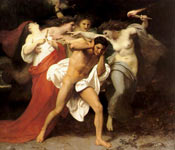

У грецькій міфології Еринії (Erinyes) - богині помсти, породжені богинею землі Геей, яка увібрала кров оскопленного Урана або, за іншими варіантами, ніхто, богинею ночі, і жили в Аїді; іноді зображуються у вигляді собак або змій, що підкреслює їх хтонічний характер. Уособлюють докори сумління і висловлюють уявлення про те, що злочин породжує на світло сили, які рано чи пізно знищують винного. У грецькій міфології безліч міфів пов'язано з трьома Ерінії: Алекто, Тисифона і мегера. Стародавні греки уявляли собі іриній у вигляді огидних бабусь з волоссям, перевитими отруйними зміями, з запаленими смолоскипами, бичами і знаряддями катувань. Вони переслідують грішників невідступно, як зграя гончих псів і карають за скоєні злочини, непомірність, зарозумілість, жадібність, скупість, гординю.
Голоси іриній схожі з ревом худоби і собачим гавкотом. Місце проживання божевільних демонів - підземне царство Аїда і Персефони, де вони пріслужіваютбогам підземного царства мертвих і звідки вони з'являються на землі серед людей, щоб завдати їм помста, безумство, злобу. Так, Алекто, напоєна отрутою горгони, проникнувши у вигляді змії в груди цариці латинів Амати і наповнивши злістю її серце, зробила її божевільною. Та ж Алекто в образі страшної баби спонукала до бою вождя рутулов - Турна, викликавши тим самим кровопролиття. Жахлива Тисифона в Тартар б'є бичем злочинців і лякає їх зміями, повна мстивого гніву. Існує переказ про любов Тисифона до царя Кифероне. Коли Киферон відкинув її любов, Ерін забила його своїм волоссям-зміями. Їх сестра, Мегера - уособлення гніву і мстивості, до теперішнього часу Мегера залишається загальним позначенням злий, мстивою і сварливою жінки.
На більш пізньому етапі давньогрецької культури еринії перетворюються в Евменід, «оре добро», і уособлюють порядок і законність як характеристики космічно організованого світобудови (пор. У Анаксимандра: «Сонце не переступить заходи, інакше Ерін, слуги Дике, його наздоженуть»). Переломний момент в розумінні ролі іриній настає в міфі про Оресте, описаному Есхілом в "Евменід". Будучи найдавнішими хтоническими божествами і охоронницею материнського права, вони переслідують Ореста за вбивство матері. Після суду в ареопазі, де еринії сперечаються з Афіною і Аполлоном, що захищають Ореста, вони примиряються з новими богами, після чого отримують ім'я е вменіди ( "благомислячих"), тим самим змінюючи свою злобну сутність ( "божевільні") на функцію покровительки законності.
Звідси уявлення в грецькій натурфілософії, у Геракліта, про Ерін як "блюстительницею правди", бо без їх волі навіть "сонце не переступить своєї міри"; коли Сонце виходить за свою колію і загрожує світу загибеллю, саме вони змушують його повернутися на місце. Образ іриній пройшов шлях від хтонічних божеств, які охороняють права мертвих, до упорядниця космічного порядку. Високоповажні, прихильними еринії виступають стосовно герою раннього покоління Едіпові, який убив, того не відаючи, рідного батька і одружився на своїй матері. Вони дають йому заспокоєння в своїй священному гаю. Тим самим богині здійснюють справедливість: чаша мук Едіпа переповнилася через край. Він уже сам засліпив себе за мимовільну злочин, а опинившись у вигнанні, страждав від егоїзму синів.
З Ерінії іноді ототожнювалася богиня справедливої відплати Немезида. У Римі Ерінії відповідали фурії ("божевільні", "люті"), Furies, Furiae (від furire, "шаленіти"), богині помсти і докорів сумління, що карають людину за скоєні гріхи.